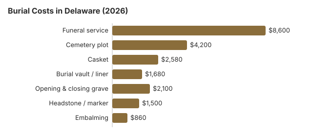

Burial Costs in Delaware (2026)
For Delaware families choosing burial in 2026, the honest pricing conversation starts with three numbers: the $8,600 funeral service average, the $4,200 cemetery plot average, and the $500-$5,000 headstone range. Add vault, opening-and-closing, casket and a headstone and the complete Delaware picture runs $19,660 to $24,160.
Delaware Burial Costs by Item
| Item | Average Cost | Range |
|---|---|---|
| Funeral service | $8,600 | $6,450 – $11,180 |
| Cemetery plot | $4,200 | $2,100 – $8,400 |
| Casket | $2,580 | $860 – $6,880 |
| Burial vault / liner | $1,680 | $800 – $10,000 |
| Opening & closing grave | $2,100 | $500 – $3,000 |
| Headstone / marker | $1,500 | $500 – $5,000+ |
| Embalming | $860 | $500 – $1,500 |
Methodology note: These figures are our estimates, not a survey of local providers, and they are not a quote or professional advice. See how we calculate them or read the full disclaimer.
State sources: Delaware Cemetery Board.

The total cost of burial in Delaware, including all cemetery fees, typically ranges from $19,660 to $24,160 depending on choices made.
Choosing a Type of Burial in Delaware
How to Reduce Burial Costs in Delaware
Burial costs in Delaware can be managed with smart planning:
- Request itemized pricing from every provider: Funeral homes in Delaware must provide a General Price List. Cemeteries are not required to, but most in the Delaware area will share one if you ask specifically for the itemized price sheet rather than a "package."
- Confirm winter pricing up front: Delaware cemeteries frequently add frozen-ground charges from December through March, or require winter vault storage until spring interment.
- Denominational and municipal cemeteries: Delaware has one of the highest densities of nonprofit cemeteries in the country.
- Shop outside the immediate metro: A 20-30 minute drive from Wilmington into a lower-cost county can reduce plot prices substantially without changing the family's ability to visit.
How Delaware Burial Compares With the Region
Nonprofit, municipal, and denominational cemeteries in Delaware routinely undercut commercial memorial parks by $1,260-$2,520 on the plot line.
Burial Resources
- Funeral Consumers AllianceNonprofit consumer advocacy for funeral pricing
- Headstone & Monument GuideCosts, types, and buying tips
- Green Burial OptionsEco-friendly and natural alternatives
- Best Online Casket RetailersCaskets bought online often cost less
- Best Burial InsuranceCompare plans to cover burial expenses
Compare Funeral Costs
- Average Funeral Cost in 2026National cost breakdown with real prices
- Cremation vs. Burial Cost ComparisonSide-by-side price comparison to help you decide
- Funeral Cost BreakdownEvery line item explained: know what you're paying for
- Cheapest Funeral OptionsLower-cost alternatives, with typical price ranges
- Direct Cremation: Most Affordable OptionNFDA 2023 median $2,645 with a family-supplied container (latest available)
- How to Compare Funeral PricesStep-by-step guide to getting the best price
Before buying a casket or marker for a Delaware burial, compare prices in our online casket retailer guide and headstone cost guide, and check the payment assistance guide for help with Delaware costs.
Frequently Asked Questions
What do Delaware families spend on burial?
Typical Delaware burials total between $19,660 and $24,160. Of that, the Delaware funeral service runs about $8,600, the cemetery plot $4,200, the casket around $2,580, the vault $1,680, opening-and-closing $2,100, and a headstone $500-$5,000.
Is a burial vault required in Delaware?
Burial vaults are required by most cemeteries in Delaware as a matter of cemetery policy (to prevent ground settling), though they are rarely mandated by state law. Vault costs in Delaware typically range from $800 to $10,000.
How can I reduce burial costs in Delaware?
Direct (immediate) burial skips embalming, viewing and a ceremony at the funeral home, so it is usually the lowest-cost burial on a Delaware price list. You may supply your own casket in Delaware; the FTC Funeral Rule forbids a handling fee for it. Eligible veterans in Delaware can be buried in a VA national cemetery at no cost for the grave, opening and closing, liner and marker.
How do cemetery prices differ across Delaware?
Each Delaware cemetery sets its own prices for the plot, opening and closing, and any required vault or liner. The FTC Funeral Rule covers funeral homes, not most cemeteries, so a Delaware cemetery may not be required to give an itemized price list; ask for one anyway.
What is the total cost of burial in Delaware including everything?
The first answer above lists each item; in Delaware, cash advance items such as certified death certificates, an obituary notice and flowers are added on top of the $19,660 to $24,160 range.
Can I choose a natural or green burial in Delaware?
A growing number of Delaware cemeteries now offer green burial sections (biodegradable container, no embalming, no vault), and the total cost is usually below a traditional burial. If a dedicated green burial ground is not nearby, some families in Delaware use a hybrid approach (traditional plot without embalming).
More for Delaware
Delaware's five-day rule and the burial permit
Delaware expects a body to be buried, cremated, reduced or placed in a receiving vault within five days of death. Past 24 hours it must be embalmed, refrigerated or kept in a sealed casket, and refrigeration is capped at 15 days unless an investigation, religious practice or a wait for a national cemetery or burial at sea requires more (16 Del. Admin. Code 4602, §§ 4.1, 10.1, 11.1; checked October 29, 2026).
- The permit: the funeral director prints and signs the burial-transit permit in the state's electronic system after filing the death record, and gives it to whoever runs the cemetery.
- Missing paperwork: if the cemetery has not received the permit within 10 days after a burial, it must tell the State Registrar in Dover.
- Depth: in any public or private burial ground, the top of the outer case must be at least 18 inches below the natural ground surface.
Burial rules and help in Delaware
Funeral homes handling burials in Delaware are licensed by the Delaware Division of Professional Regulation (302-744-4500). The Delaware Cemetery Board in the Division of Public Health keeps a cemetery registration and runs the Distressed Cemetery Fund, but it has no enforcement power (29 Del. C. §§ 7901A and 7904A); it refers consumer complaints elsewhere, including to the Department of Justice's Consumer Protection Unit (800-220-5424).
Delaware does not require a funeral director for a burial, by the Funeral Consumers Alliance's count of the nine states that do, so the family can work with a Delaware cemetery directly on the plot, the grave opening and the container it accepts.
A burial in Delaware goes ahead once the permit is issued; for cremation, there is no fixed waiting period, though a permit is required (16 Del. C. § 3159).
Delaware DSS covers up to $100 of burial costs for a person who was on TANF, General Assistance or Medicaid, paid to the funeral vendor, and a separate DSS service arranges burial of the indigent or unclaimed at public expense. (Source: 16 Del. Admin. Code 2000-2020; Delaware DSS indigent burial service.) Social Security's $255 payment to a surviving spouse or child is well short of the $4,200 Delaware plot estimate on this page.
For Delaware veterans, the plot and marker in a national cemetery are free, which can remove thousands from a burial bill. In Delaware, state veterans cemeteries: Delaware Veterans Memorial Cemetery - New Castle County (302-834-8046); Delaware Veterans Memorial Cemetery - Sussex County (302-934-5653) (source: VA National Cemetery Administration).
Next steps for a burial in Delaware
- Compare at least two Delaware cemeteries as well as two funeral homes, since the plot, grave opening and marker are priced separately.
- Ask the Delaware cemetery whether it requires an outer burial container before you shop for one.
- Ask the Delaware Division of Social Services whether the indigent burial service applies before buying a plot.
- For a veteran, ask Delaware Veterans Memorial Cemetery - New Castle County about eligibility before buying a private plot.
- A complaint call to 302-744-4500 is free if a funeral home misleads you about burial costs.